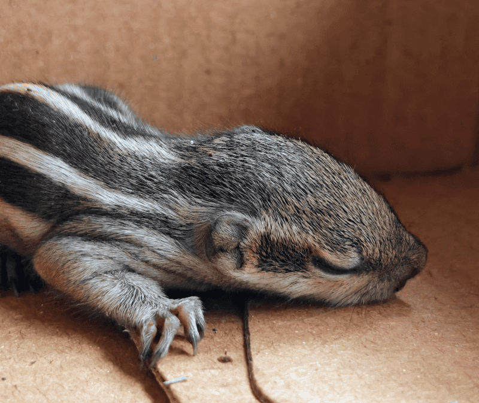
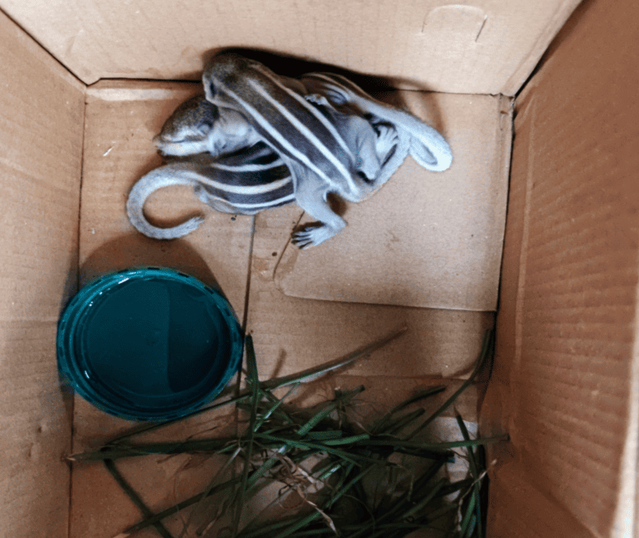
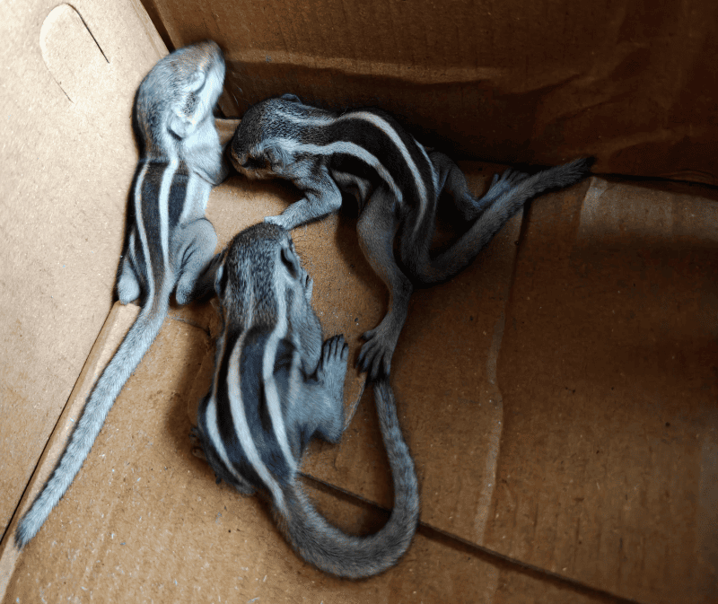

There’s an abandoned movie studio behind my apartment that has turned into dense greenery, with large trees like banyan, burflower, and mango. It’s home to all kinds of animals - stray cats and dogs, mongooses, civets, rats, snakes, squirrels, monkeys, and various kinds of birds.
My third-floor balcony, with its shade and clutter, occasionally attracts them as a temporary shelter.
Yesterday, I kept hearing continuous squirrel noises from noon onwards. I searched around but couldn’t find anything. The last time this happened, one had died trying to hide under my washing machine, so I was trying to avoid a repeat.
This morning, I found one newborn squirrel on my balcony, while two more had fallen onto the sunshade below. I pulled them up using a makeshift cardboard pulley setup and placed all three in a shoebox lined with grass.
They’re extremely young - eyes closed, barely moving. Their mother hasn’t returned. For now, I gave them a simple warm sugar-salt solution (it’s called a Pedialyte solution, apparently) using a softened earbud. They managed to drink a little.
I’ve left them on the balcony in case the mother comes back, though that seems unlikely. If she doesn’t, I’ll try to care for them for a while and later release them back once they’re grown.
Here are some pictures I took.


